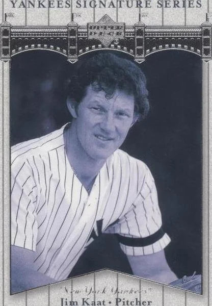

Jim Kaat "Kitty"
Career Highlights & Facts
(Facts are AI-generated and may require verification)
- This defensive specialist secured a record-tying 16 consecutive awards for his glove work, matching the streak of a legendary third baseman.
- He was a rare dual-threat athlete who achieved the unique feat of shooting his age in golf rounds as both a right-handed and left-handed player.
- Known for his blistering pace on the mound, he once faced a three-time Cy Young Award winner in a decisive Game Seven of a championship series on just two days of rest.
Would you like to find out more about Jim Kaat?
Career Totals
| WAR | W | L | ERA | G | GS | SV | IP | SO | WHIP |
|---|---|---|---|---|---|---|---|---|---|
| 50.5 | 283 | 237 | 3.45 | 898 | 625 | 17 | 4530.1 | 2461 | 1.259 |
Statistics via Baseball-Reference.com
The Original Clue